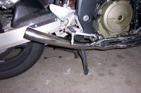
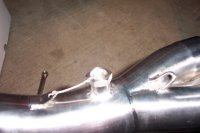

links
Homepage
Resume
Toys
Play
Music
Bike Page
02 Blackbird
|
Fitting an Akrapovic Exhaust to a Blackbird
A number of people like to fit the Akrapovic or other full-system exhaust to
the Blackbird. The instructions here are for fitting the Akra exhuast, but it
would be exactly the same for any other type of full-system. They all fit
pretty much the same, with only minor variations. This presentation will be done
comic-book style with a photo and step describing what's happening. Click on
each thumbnail to get a full-sized (1080x720) photo. Also note that all sides
of the bike are indicated from the point of sitting on the seat looking forward
in the normal riding position.
Preparation Work
Purchase the exhaust. Duh... :) There are plenty of places to
purchase them online. As of mid 2003, the going price is around US$750
+/- $20. HardRacing,
Cyclemall,
Cal-Sportbike and
Dan Kyle Racing all have decent prices and
shipping costs.
When you put a full-system exhaust onto the bike, you will lose your
centerstand, unless you do extra work. The pipe exits on the right side, but
the bump stop to hold the stand off the chain is on the left. When you remove
the stock exhausts, the stand will now rub on the chain. If you wish to keep
the centerstand (I have decided, at this point not to keep it), then you will
need to go to Two Brothers Racing and purchase the blackbird centerstand stop,
or manufacture your own. Note that you can leave the centerstand on while
you're fitting the new exhaust but will need to remove it before you ride off
if you are not going to keep it.
The second issue with akra fitting is that the clearance with the front fairing
is non-existant. On the right side, where it goes along the side of the engine
the fairing touches the header. You have two options - trimming the fairing or
letting it sit on the exhaust and let the heat melt the fairing to the right
shape. I ended up choosing the later option as I'm not that good with the
trimming tools and this way got the shape I needed. Once the headers heated
up, it only took about 10 seconds for the fairing to melt to the right shape
and there is barely any noticable effect (ie heat warping of the paint or
other ugliness).
Thirdly is clearance. The Akra header sits about 6mm lower that then stock
header. It doesn't sound like much, but that's enough for it to scrape and
bang on things like speed humps. One good bang and it will dint the exhaust,
thus effecting the internal flow and one of the reasons you put the thing
onto the bike in the first place. To alleviate this issue, you simply raise
the back of the bike a bit. Grab two or three big penny washers - enough
thickness to give you about 4-6mm, and place them
under the rear shock mount between the top of the shock and the frame mount.
Simply slot the washers so you now have a U shape, put the bike onto the
centrestand, undo the top shock mount bolt a fair way, but not all the way off
(you'll have to lift the tank up to get to it), slide the washers in and do it
all up again. You'll find that the rear wheel may still be touching the ground
even on the stand now, but it's a small price to pay for avoiding damage to
your exhaust - not to mention it will liven the handling up quite a bit making
it a nicer bike to ride in the twisties.
Fitting
1. Pulling off the old system |
|
|
|
To remove the old system, start by removing the lower fairings on both sides
as well as the front pieces that sit just behind the wheel. It's going to be
much easier if you just remove everything there rather than trying to leave
some bits on to save time. You should end up with a bike that looks like the
first image.
As you'll quickly see, the radiator is in the way. Grab an 8mm socket and a long
extension and loosen the two bolts holding it on the top. Don't undo them all the
way, just back them off a little. Next, crawl under the bike and look for the
lower support the radiator. It will look like a thin piece of metal that comes
from between the exhaust headers and connects with a flange on the bottom of
radiator. There's nothing holding this in other than friction, so grab it, pull
it sideways until it disconnects and pull the radiator forward. The radiator
should just sit there either hanging vertically or sitting slightly forward. If
you want, a piece of string aroudn the bottom can be used to pull it further
forward out of your way.
|
|
|
|
Now, head to the back of the bike and start removing the old system piece by
piece, starting with the cans. Remove the bolt that is holding it on to the
passenger footpegs. There's another bolt hidden down near the stand mount too.
Finally, loosen off the clamps holding the can onto the main exhaust tubing.
Grab the can and twist back and forth, pulling away from the bike, until the
can comes off. Lather, rinse, repeat for the other side. (Note, in the
images above, I removed the cans before starting on the rest of the bike as I
was fitting a few other things at the same time as I was doing this).
Next undo the bolt that is hidden away near the centrestand mount. It's a bit
hard to find initially, but with a torch, a long extension and the above
picture, you should be fine. :)
Finally, move to the front of the bike and start undoing the headers. The bolts
are hidden away a fair bit, so the best tactic to get to them is a 3/8" drive
socket set with a 12" extension. This allows you to slide up between the
headers and all the other annoying stuff around the front of the bike. I would
recommend starting with the centre bolts and working your way towards the
outside. Each exhaust outlet has two bolts, so make sure you've undone all 8
bolts before trying to remove the header. Also note that the header bolts use
a double ended bolt - that is, there's a nut on the end, but the bolts also
screw into the cylinder block. However the rust has worked into the bolts,
some will undo just a nut, others will pull out a complete bolt. This is
nothing to worry about.
|
2. Fitting the headers |
|


|
|
Once the old exhaust is removed, it's time to move into the new exhaust.
Fitting of the new exhuast is in the opposite order to removal - we start
with the headers and work towards the back of the bike, one piece at a time.
Start by placing the headers on the bike, Note how both pass down and under
the right side of the bike. Unlike the stock headers, the Akra system is two
pieces - each piece fitting a pair of exhaust ports. Start with the set that
fits onto the left side of the bike. Before placing the headers on the bike,
take a look at the manifold plate that is sitting around the end of the header.
You'll notice that it has two bolt holes, and on one side there will be a small
drilled hole. This is important, as that is where the spring is going to be
mounted later. Locate the loop that is on the header and make sure that when
you fit the header to the engine block that that small hole and the loop on
the exhaust are on the same side (typically on the "down" side). Place on the
header and lightly tighten up the four bolts. Do not put the springs on at this
stage, just the bolts. Actually, don't even tighten those up much at all. All
we want them to do is to be in enough to stop the headers falling off the bike
as we fit everything. After the left side is done, do the right side. When
complete, it should look like the first image above.
Fit the lead pipe next. Again, do not put the springs on just yet. Fitting this
pipe may take a bit of jiggling around as the headers won't be quite sitting
in perfect alignment. It's a bit easier if you have two people to do this, but
I did it just fine by myself. On this pipe section, you'll notice something
that looks like a lockwired nut. This is for fitting the O2 sensor
for those bikes that have it fitted (US CA and european models). Everyone else
can ignore it.
To fit the can, first pick up the carbon fibre rear mount and place it around
the can. Note that you slide this over the can from the end - don't attempt to
fit it by opening splitting it open and fitting from the side. The instructions
were really unclear about which way this piece goes on. When you look at it,
you'll see that it is clearly offset. After much playing around, I determined
that the offset piece should go to the outside of the exhaust (away from the
swingarm) and fit to the outside of the passenger footpeg. But, before you do
that, first fit the can over the end of the lead pipe. If you are so inclined,
some copper anti-seize here would be useful (after a year and 12K miles, my
exhaust comes off easily without needing any anti sieze). Put the bolt through
top fitting strap and footpeg mount.
|
|
|
|
Now, head around the exhaust and and make sure all the joints are snug and
everything looks right. You shouldn't have any binding on the joints between
the various sections or looking like the exhaust is twisted or out of shape. When
everything checks out fine, head back to the front of the bike and tighten the
header bolts up more. Don't do them all the way up yet as we have to fit the
springs, don't have the entire exhaust just floating around either. The more
you do these bolts up, the harder the next step is - fitting the springs.
Find some bandaids and a couple of really good sets of either standard pliers
or vice grips. Fitting the springs for the headers is quite a task and will
involve bits of lost skin if you're not really careful (and even if you are
sometimes!). Start in the center and fit the springs between the headers and
the manifold plate. You will probably need to crawl under the front of the bike
with a torch to see where the holes are in the plate. Slide one end of the
spring into the hole and then use the pliers to extend the spring to go over
the loop on the header. If you can afford a set of spring fitting tools, these
would be a very worthwhile investment for this task as it simplifies the
process a lot over a set of pliers.
|
|
|
|
After completing the header springs, tighten up the bolts according to specs,
Then up work your way along the exhaust fitting the springs to each section
join. Give the bike a bit of a test run and make sure it all looks good and
you're not getting excessive noise. At idle, the Akras are just a fraction
louder than the stock exhaust, so any really loud noise means that you've
probably missed one of the bolts around the header fitting. Rattles mean that
you've missed a spring somewhere.
Once you're happy with everything, put the radiator back in place, fit the
panels and remove the centerstand. Now, go enjoy the ride!
|
|
|
[ Homepage
][
VRML
][
Java
][
Linux
][
Books
]
|
{kind=link}
{kind=link}
{kind=link}
{kind=link}
{kind=link}
{kind=link}
{kind=link}
{kind=link}
{kind=link}
{kind=link}
{kind=link}
{kind=link}
{kind=link}
{kind=link}